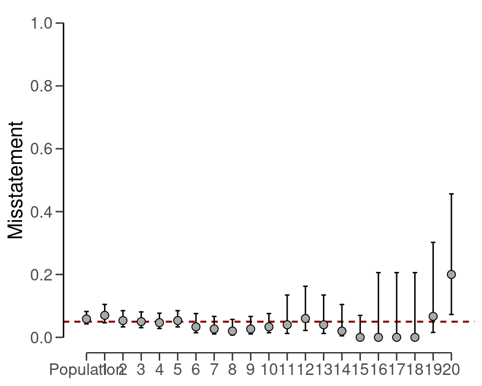
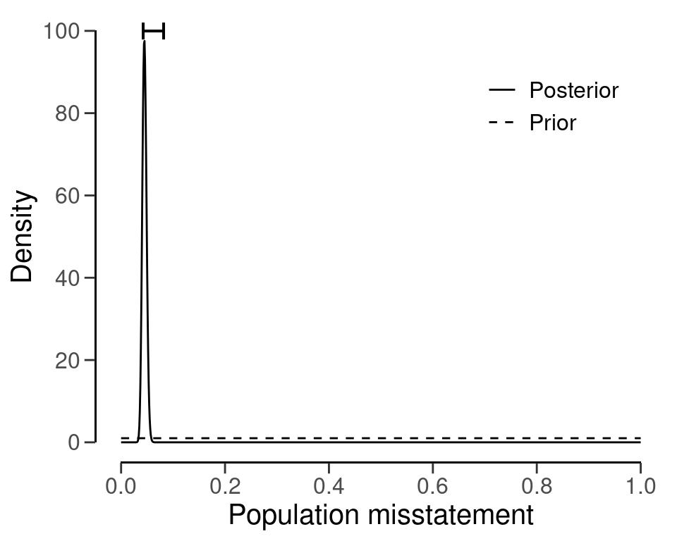
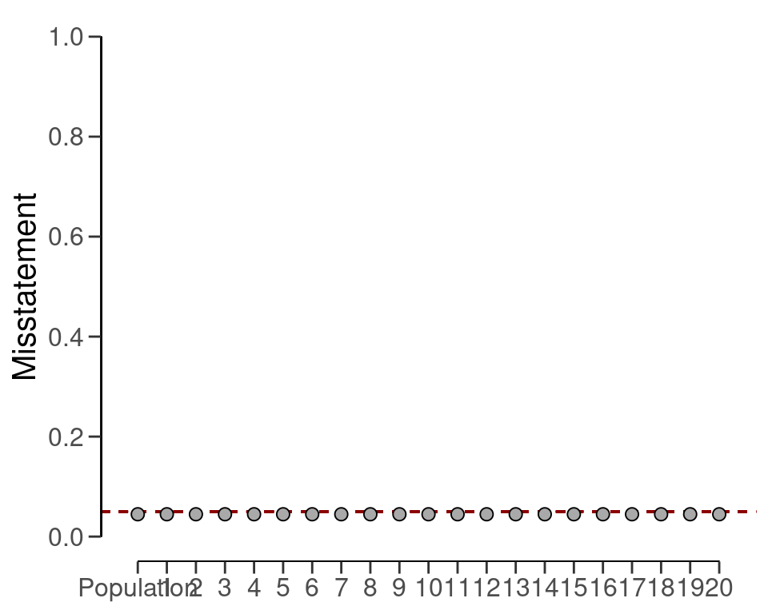
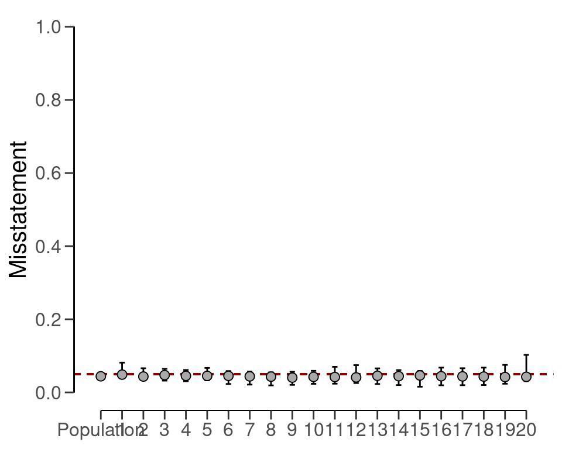
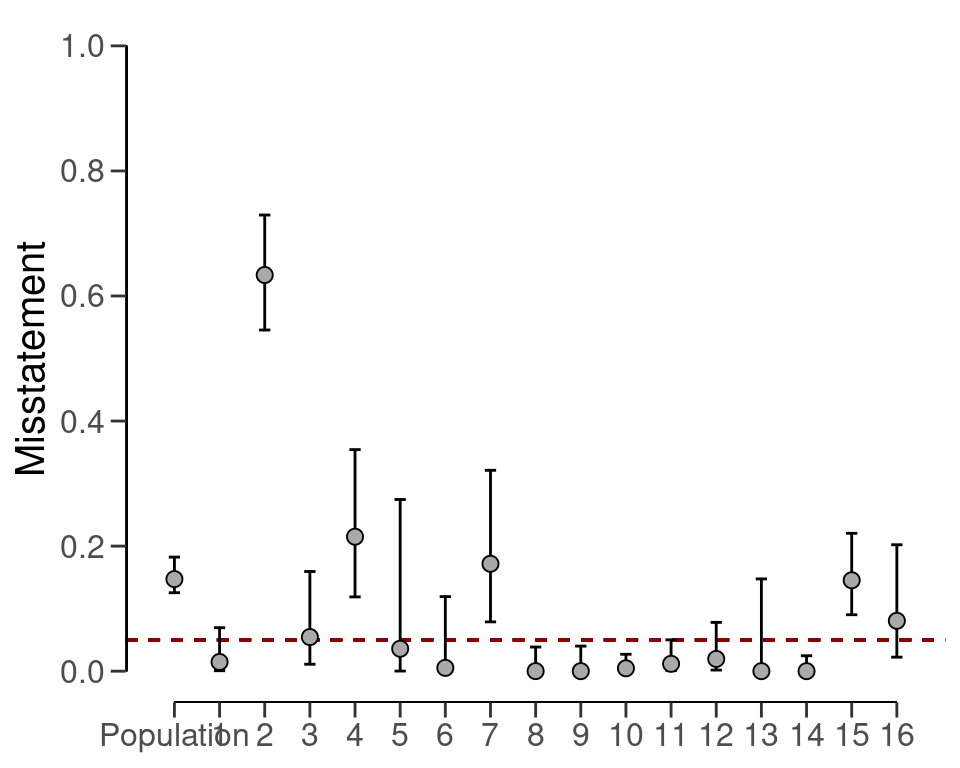
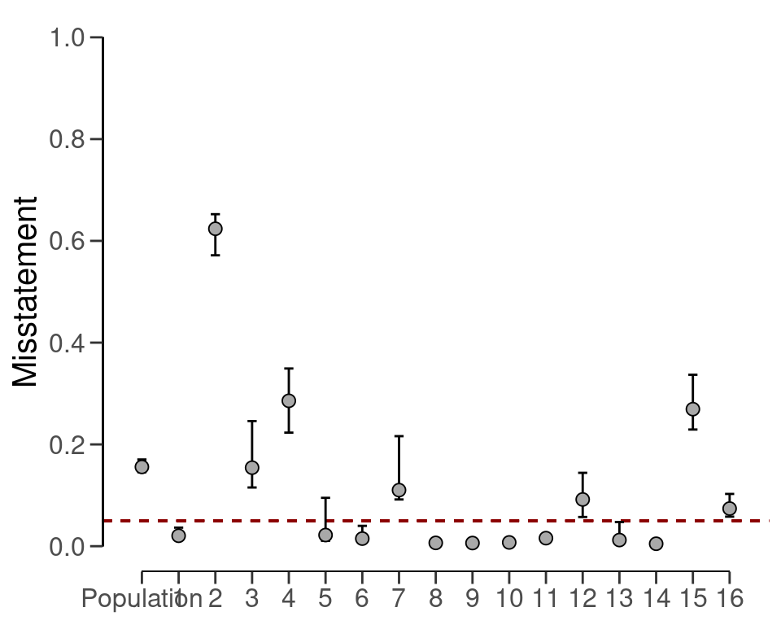
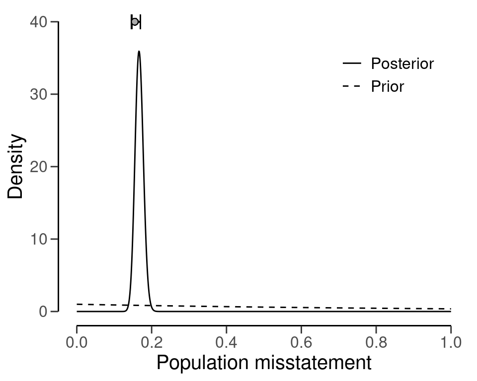

6 Stratified Evaluation
You are reading the work-in-progress first edition of Statistical Auditing with R. This chapter is currently a dumping ground of ideas, and it is incomplete.
In an audit context, stratified sampling can be used to select a sample of transactions from different departments, locations, or business units to ensure that the sample is representative of the population. This means that there is a hierarchical structure in the data (strata are nested in the population) and the statistical model should ideally reflect this.
In general, there are three approaches to evaluating a stratified sample: no pooling, complete pooling, and partial pooling. No pooling assumes no similarities between strata, which means that all strata are analyzed independently. Complete pooling assumes no difference between strata, which means that all data is aggregated and analyzed as a whole. Finally, partial pooling assumes differences and similarities between strata, which means that information can be shared between strata. Partial pooling (i.e., hierarchical modeling) is a powerful technique that can result in more efficient population and stratum estimates.
For example, if you want to audit the expense claims of a large organization, you can stratify the population based on the department, location, or business unit to ensure that all departments are represented accordingly in the sample. Another example of such a situation would be a group audit where the audited organization consists of different components or branches. Stratification is relevant for the group auditor if they must form an opinion on the group as a whole because they must aggregate the samples taken by the component auditors.
As a data example, consider the retailer data set that comes with the package. The organization in question consists of 20 branches across the country. In each of the 20 strata, a component auditor has taken a statistical sample and reported the outcomes to the group auditor.
data(retailer)
head(retailer)
#> stratum items samples errors
#> 1 1 5000 300 21
#> 2 2 5000 300 16
#> 3 3 5000 300 15
#> 4 4 5000 300 14
#> 5 5 5000 300 16
#> 6 6 5000 150 5The number of units per stratum in the population can be provided with N.units to weigh the stratum estimates to determine population estimate. This is called poststratification. If N.units is not specified, each stratum is assumed to be equally represented in the population.
6.1 No pooling
No pooling (pooling = "none", default) assumes no similarities between strata. This means that the prior distribution specified through prior is applied independently for each stratum. This allows for independent estimates for the misstatement in each stratum but also results in a relatively high uncertainty in the population estimate. The call below evaluates the sample using a Bayesian stratified evaluation procedure, in which the stratum estimates are poststratified to arrive at the population estimate.
set.seed(1) # Important because the posterior distribution is determined via sampling
result_np <- evaluation(
materiality = 0.05, method = "binomial", prior = TRUE,
n = retailer$samples, x = retailer$errors, N.units = retailer$items,
alternative = "two.sided", pooling = "none"
)
summary(result_np)
#>
#> Bayesian Audit Sample Evaluation Summary
#>
#> Options:
#> Confidence level: 0.95
#> Population size: 144000
#> Materiality: 0.05
#> Hypotheses: H₀: Θ = 0.05 vs. H₁: Θ ≠ 0.05
#> Method: binomial
#> Prior distribution: Nonparametric
#>
#> Data:
#> Sample size: 2575
#> Number of errors: 115
#> Sum of taints: 115
#>
#> Results:
#> Posterior distribution: Nonparametric
#> Most likely error: 0.0598
#> 95 percent credible interval: [0.042763, 0.082201]
#> Precision: 0.022401
#> BF₁₀: 0
#>
#> Strata (20):
#> N n x t mle lb ub precision
#> 1 5000 300 21 21 0.07000 0.04637 0.10467 0.03467
#> 2 5000 300 16 16 0.05333 0.03324 0.08489 0.03156
#> 3 5000 300 15 15 0.05000 0.03069 0.08086 0.03086
#> 4 5000 300 14 14 0.04667 0.02816 0.07681 0.03014
#> 5 5000 300 16 16 0.05333 0.03324 0.08489 0.03156
#> 6 5000 150 5 5 0.03333 0.01472 0.07558 0.04225
#> 7 5000 150 4 4 0.02667 0.01084 0.06643 0.03977
#> 8 5000 150 3 3 0.02000 0.00726 0.05696 0.03696
#> 9 5000 150 4 4 0.02667 0.01084 0.06643 0.03977
#> 10 5000 150 5 5 0.03333 0.01472 0.07558 0.04225
#> 11 10000 50 2 2 0.04000 0.01230 0.13459 0.09459
#> 12 10000 50 3 3 0.06000 0.02178 0.16242 0.10242
#> 13 10000 50 2 2 0.04000 0.01230 0.13459 0.09459
#> 14 10000 50 1 1 0.02000 0.00478 0.10447 0.08447
#> 15 10000 50 0 0 0.00000 0.00050 0.06978 0.06978
#> 16 10000 15 0 0 0.00000 0.00158 0.20591 0.20591
#> 17 10000 15 0 0 0.00000 0.00158 0.20591 0.20591
#> 18 10000 15 0 0 0.00000 0.00158 0.20591 0.20591
#> 19 10000 15 1 1 0.06667 0.01551 0.30232 0.23565
#> 20 4000 15 3 3 0.20000 0.07266 0.45646 0.25646In this case, the output of the summary() function shows that the estimate of the misstatement in the population is 5.85%, with the 95% credible interval ranging from 4.28% to 8.22%. The stratum estimates differ substantially from each other but are relatively uncertain.
plot(result_np, type = "estimates")
The prior and posterior distribution for the population misstatement can be requested via the plot() function.
plot(result_np, type = "posterior")
6.2 Complete pooling
Complete pooling (pooling = "complete") assumes no differences between strata. This has the advantages that data from all strata can be aggregated, which decreases the uncertainty in the population estimate compared to the no pooling approach. However, the disadvantage of this approach is that it does not facilitate the distinction between between strata, as every stratum receives the same estimate equal to that of the population. The call below evaluates the sample using a Bayesian stratified evaluation procedure, in which the strata are assumed to be the same.
result_cp <- evaluation(
materiality = 0.05, method = "binomial", prior = TRUE,
n = retailer$samples, x = retailer$errors, N.units = retailer$items,
alternative = "two.sided", pooling = "complete"
)
summary(result_cp)
#>
#> Bayesian Audit Sample Evaluation Summary
#>
#> Options:
#> Confidence level: 0.95
#> Population size: 144000
#> Materiality: 0.05
#> Hypotheses: H₀: Θ = 0.05 vs. H₁: Θ ≠ 0.05
#> Method: binomial
#> Prior distribution: beta(α = 1, β = 1)
#>
#> Data:
#> Sample size: 2575
#> Number of errors: 115
#> Sum of taints: 115
#>
#> Results:
#> Posterior distribution: beta(α = 116, β = 2461)
#> Most likely error: 0.04466
#> 95 percent credible interval: [0.03735, 0.053345]
#> Precision: 0.0086852
#> BF₁₀: 0.022725
#>
#> Strata (20):
#> N n x t mle lb ub precision bf10
#> 1 5000 300 21 21 0.04466 0.03735 0.05335 0.00869 0.02273
#> 2 5000 300 16 16 0.04466 0.03735 0.05335 0.00869 0.02273
#> 3 5000 300 15 15 0.04466 0.03735 0.05335 0.00869 0.02273
#> 4 5000 300 14 14 0.04466 0.03735 0.05335 0.00869 0.02273
#> 5 5000 300 16 16 0.04466 0.03735 0.05335 0.00869 0.02273
#> 6 5000 150 5 5 0.04466 0.03735 0.05335 0.00869 0.02273
#> 7 5000 150 4 4 0.04466 0.03735 0.05335 0.00869 0.02273
#> 8 5000 150 3 3 0.04466 0.03735 0.05335 0.00869 0.02273
#> 9 5000 150 4 4 0.04466 0.03735 0.05335 0.00869 0.02273
#> 10 5000 150 5 5 0.04466 0.03735 0.05335 0.00869 0.02273
#> 11 10000 50 2 2 0.04466 0.03735 0.05335 0.00869 0.02273
#> 12 10000 50 3 3 0.04466 0.03735 0.05335 0.00869 0.02273
#> 13 10000 50 2 2 0.04466 0.03735 0.05335 0.00869 0.02273
#> 14 10000 50 1 1 0.04466 0.03735 0.05335 0.00869 0.02273
#> 15 10000 50 0 0 0.04466 0.03735 0.05335 0.00869 0.02273
#> 16 10000 15 0 0 0.04466 0.03735 0.05335 0.00869 0.02273
#> 17 10000 15 0 0 0.04466 0.03735 0.05335 0.00869 0.02273
#> 18 10000 15 0 0 0.04466 0.03735 0.05335 0.00869 0.02273
#> 19 10000 15 1 1 0.04466 0.03735 0.05335 0.00869 0.02273
#> 20 4000 15 3 3 0.04466 0.03735 0.05335 0.00869 0.02273For example, the output of the summary() function shows that the estimate of the misstatement in the population is 4.47%, with the 95% credible interval ranging from 3.74% to 5.33%. Since the data is aggregated, the stratum estimates contain relatively little uncertainty. However, the probability of misstatement in stratum 20 (many misstatements) under this assumption is the same as that of stratum 15 (few misstatements).
plot(result_cp, type = "estimates")
The prior and posterior distribution for the population misstatement can be requested via the plot() function.
plot(result_cp, type = "posterior")6.3 Partial pooling
Finally, partial pooling (pooling = "partial") assumes differences and similarities between strata. This allows the auditor to differentiate between strata, while also sharing information between the strata to reduce uncertainty in the population estimate.
The call below evaluates the sample using a Bayesian stratified evaluation procedure, in which the stratum estimates are poststratified to arrive at the population estimate.
set.seed(1) # Important because the posterior distribution is determined via sampling
result_pp <- evaluation(
materiality = 0.05, method = "binomial", prior = TRUE,
n = retailer$samples, x = retailer$errors, N.units = retailer$items,
alternative = "two.sided", pooling = "partial"
)
summary(result_pp)
#>
#> Bayesian Audit Sample Evaluation Summary
#>
#> Options:
#> Confidence level: 0.95
#> Population size: 144000
#> Materiality: 0.05
#> Hypotheses: H₀: Θ = 0.05 vs. H₁: Θ ≠ 0.05
#> Method: binomial
#> Prior distribution: beta(α = 1, β = 1)
#>
#> Data:
#> Sample size: 2575
#> Number of errors: 115
#> Sum of taints: 115
#>
#> Results:
#> Posterior distribution: beta(α = 116, β = 2461)
#> Most likely error: 0.0432
#> 95 percent credible interval: [0.034575, 0.052994]
#> Precision: 0.0097941
#> BF₁₀: 0.022725
#>
#> Strata (20):
#> N n x t mle lb ub precision
#> 1 5000 300 21 21 0.0467 0.03778 0.07996 0.03326
#> 2 5000 300 16 16 0.0466 0.03335 0.06634 0.01974
#> 3 5000 300 15 15 0.0436 0.03184 0.06439 0.02079
#> 4 5000 300 14 14 0.0437 0.03121 0.06147 0.01777
#> 5 5000 300 16 16 0.0450 0.03328 0.06707 0.02207
#> 6 5000 150 5 5 0.0421 0.02346 0.05876 0.01666
#> 7 5000 150 4 4 0.0402 0.02165 0.05686 0.01666
#> 8 5000 150 3 3 0.0405 0.01807 0.05541 0.01491
#> 9 5000 150 4 4 0.0447 0.02082 0.05651 0.01181
#> 10 5000 150 5 5 0.0429 0.02326 0.05899 0.01609
#> 11 10000 50 2 2 0.0466 0.02271 0.06766 0.02106
#> 12 10000 50 3 3 0.0434 0.02654 0.07291 0.02951
#> 13 10000 50 2 2 0.0429 0.02270 0.06701 0.02411
#> 14 10000 50 1 1 0.0452 0.02022 0.06137 0.01617
#> 15 10000 50 0 0 0.0407 0.01608 0.05795 0.01725
#> 16 10000 15 0 0 0.0422 0.01964 0.06657 0.02437
#> 17 10000 15 0 0 0.0432 0.02023 0.06786 0.02466
#> 18 10000 15 0 0 0.0484 0.01956 0.06639 0.01799
#> 19 10000 15 1 1 0.0433 0.02447 0.07685 0.03355
#> 20 4000 15 3 3 0.0404 0.03031 0.10450 0.06410In this case, the output shows that the estimate of the misstatement in the population is 4.34%, with the 95% credible interval ranging from 3.45% to 5.33%. Note that this population estimate is substantially less uncertain than that of the no pooling approach. Note that, like in the no pooling approach, the stratum estimates are different from each other but lie closer together and are less uncertain.
plot(result_pp, type = "estimates")
The prior and posterior distribution for the population misstatement can be requested via the plot() function.
plot(result_pp, type = "posterior")6.4 Evaluation using data
For this example, we take the allowances that set that comes with the package. This data set contains 3500 financial statement line items, each with a booked value bookValue and, for illustrative purposes, and audited (true) value auditValue. Since the focus of this vignette is the evaluation stage in the audit, the sample is already indicated in the data set. The performance materiality in this example is set to 5%.
data(allowances)
head(allowances)
#> item branch bookValue auditValue times
#> 1 1 12 1600 1600 1
#> 2 2 12 1625 NA 0
#> 3 3 12 1775 NA 0
#> 4 4 12 1250 1250 1
#> 5 5 12 1400 NA 0
#> 6 6 12 1190 NA 0Evaluating a stratified sample using data requires specification of the data, values, values.audit and strata arguments in the evaluation() function. In this case, the units are monetary and calculated by aggregating the book values of the items in each stratum.
N.units <- aggregate(allowances$bookValue, list(allowances$branch), sum)$x6.4.1 Classical Evaluation
The call below evaluates the allowances sample using a classical stratified evaluation procedure, in which the stratum estimates are poststratified to arrive at the population estimate.
x <- evaluation(
materiality = 0.05, data = allowances,
values = "bookValue", values.audit = "auditValue", strata = "branch", times = "times",
alternative = "two.sided", N.units = N.units
)
summary(x)
#>
#> Classical Audit Sample Evaluation Summary
#>
#> Options:
#> Confidence level: 0.95
#> Population size: 16772249
#> Materiality: 0.05
#> Hypotheses: H₀: Θ = 0.05 vs. H₁: Θ ≠ 0.05
#> Method: poisson
#>
#> Data:
#> Sample size: 1604
#> Number of errors: 401
#> Sum of taints: 252.9281046
#>
#> Results:
#> Most likely error: 0.14723
#> 95 percent confidence interval: [0.12549, 0.18239]
#> Precision: 0.03516
#> p-value: NA
#>
#> Strata (16):
#> N n x t mle lb ub precision p.value
#> 1 317200.09 87 6 1.27814 0.01469 0.00073 0.06950 0.05481 0.46285
#> 2 2792814.33 305 233 193.23313 0.63355 0.54558 0.72945 0.09590 0.00000
#> 3 1144231.69 55 3 3.00000 0.05455 0.01105 0.15940 0.10486 0.75827
#> 4 414202.89 70 45 15.05094 0.21501 0.11878 0.35434 0.13933 0.00000
#> 5 96660.53 18 1 0.64537 0.03585 0.00015 0.27456 0.23871 0.59343
#> 6 348006.13 34 1 0.17866 0.00525 0.00000 0.11926 0.11401 1.00000
#> 7 2384079.33 55 14 9.44448 0.17172 0.07885 0.32122 0.14950 0.00058
#> 8 1840399.33 96 1 0.00813 0.00008 0.00000 0.03860 0.03852 0.10355
#> 9 563957.70 92 0 0.00000 0.00000 0.00000 0.04010 0.04010 0.01783
#> 10 3198877.73 201 7 0.92023 0.00458 0.00009 0.02703 0.02245 0.00122
#> 11 1983299.06 128 7 1.50034 0.01172 0.00084 0.05013 0.03841 0.10773
#> 12 319144.13 86 5 1.68141 0.01955 0.00174 0.07806 0.05851 0.46069
#> 13 148905.79 25 0 0.00000 0.00000 0.00000 0.14756 0.14756 0.64187
#> 14 513058.76 150 0 0.00000 0.00000 0.00000 0.02459 0.02459 0.00134
#> 15 432007.61 150 39 21.80000 0.14533 0.09026 0.22045 0.07511 0.00001
#> 16 275403.70 52 39 4.18726 0.08052 0.02237 0.20215 0.12163 0.12258In this case, the output shows that the estimate of the misstatement in the population is 14.72%, with the 95% confidence interval ranging from 12.55% to 18.26%. The precision of the population estimate is 3.54%. The stratum estimates can be seen in the output of the summary() function and are visualized below.
plot(x, type = "estimates")
6.4.2 Bayesian Evaluation
Bayesian inference can improve upon the estimates of the classical approach by pooling information between strata where possible. The call below evaluates the allowances sample using a Bayesian multilevel stratified evaluation procedure, in which the stratum estimates are poststratified to arrive at the population estimate.
x <- evaluation(
materiality = 0.05, data = allowances, prior = TRUE,
values = "bookValue", values.audit = "auditValue", strata = "branch", times = "times",
alternative = "two.sided", N.units = N.units, pooling = "partial"
)
summary(x)
#>
#> Bayesian Audit Sample Evaluation Summary
#>
#> Options:
#> Confidence level: 0.95
#> Population size: 16772249
#> Materiality: 0.05
#> Hypotheses: H₀: Θ = 0.05 vs. H₁: Θ ≠ 0.05
#> Method: poisson
#> Prior distribution: gamma(α = 1, β = 1)
#>
#> Data:
#> Sample size: 1350
#> Number of errors: 401
#> Sum of taints: 224.657517
#>
#> Results:
#> Posterior distribution: gamma(α = 225.658, β = 1351)
#> Most likely error: 0.1549
#> 95 percent credible interval: [0.14616, 0.17]
#> Precision: 0.015096
#> BF₁₀: 2.751e+47
#>
#> Strata (16):
#> N n x t mle lb ub precision
#> 1 317200.09 62 6 1.07814 0.0207 0.01365 0.03625 0.01555
#> 2 2792814.33 283 233 176.87807 0.6056 0.57370 0.65251 0.04691
#> 3 1144231.69 55 3 3.00000 0.1726 0.11680 0.24039 0.06779
#> 4 414202.89 48 45 11.65094 0.2925 0.22203 0.34698 0.05448
#> 5 96660.53 9 1 0.21512 0.0216 0.01058 0.08814 0.06654
#> 6 348006.13 14 1 0.04467 0.0133 0.00707 0.04013 0.02683
#> 7 2384079.33 44 14 6.65401 0.1426 0.09194 0.21343 0.07083
#> 8 1840399.33 78 1 0.00813 0.0063 0.00467 0.00939 0.00309
#> 9 563957.70 74 0 0.00000 0.0062 0.00460 0.00972 0.00352
#> 10 3198877.73 184 7 0.89982 0.0079 0.00618 0.01055 0.00265
#> 11 1983299.06 111 7 1.35066 0.0143 0.01100 0.02263 0.00833
#> 12 319144.13 56 5 1.19069 0.0786 0.05665 0.14477 0.06617
#> 13 148905.79 10 0 0.00000 0.0120 0.00624 0.04535 0.03335
#> 14 513058.76 150 0 0.00000 0.0048 0.00381 0.00635 0.00155
#> 15 432007.61 128 39 18.30000 0.2709 0.22911 0.33339 0.06249
#> 16 275403.70 44 39 3.38726 0.0774 0.05796 0.10226 0.02486The output shows that the estimate of the misstatement in the population is 15.66%, with the 95% credible interval ranging from 14.59% to 17%. The precision of the population estimate is 1.34%, which is substantially lower than that of the classical approach. The stratum estimates can be seen in the output of the summary() function and are visualized below.
plot(x, type = "estimates")
The prior and posterior distribution for the population misstatement can be requested via the plot() function.
plot(x, type = "posterior")